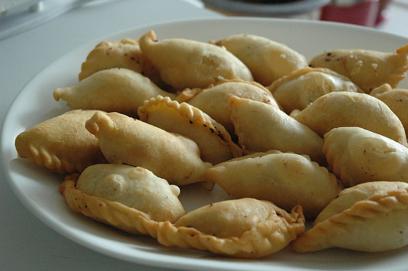

Ghughra Recipe |
| Rateing |
| prep time:20 minit |
| cook time:20 minit |
| total time:40 minit |
|  |
Ingredients: |
2 cup Maida
½ Rawa
¼ cup Grated coconut (Dry)
¼ cup Raisins
¼ cup Almonds (chopped)
1.5 cup powder Sugar
½ tsp Cardamom powder
3 tbsp Desi Ghee
Ghee for frying
|
Instructions: |
|
Roasted rawa in ghee in a pan till it become light brown in color at slow flame.
Add cardamom powder, almonds, coconuts, raisins and sugar also.
Mix it properly and keep a side.
Add 1 table spoon ghee in maida and mix it well.
Knead the dough. And divide in to small balls.
And roll it into like small puri.
Put stuffing mixture in puri.
Edge of puri towards each other and press edge slowly.
Make ghughra in various shapes.
Heat ghee in a pan at slow flame.
Fry it properly. Ghughra is ready for serve. |
video: |